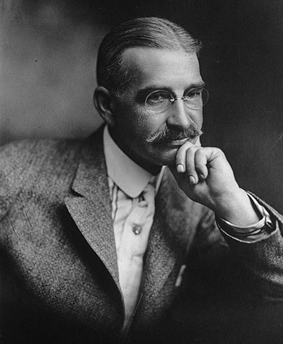

Lyman Frank Baum was an American author best known for his children's books, particularly The Wonderful Wizard of Oz and its sequels. He wrote 14 novels in the Oz series, plus 41 other novels, 83 short stories, over 200 poems, and at least 42 scripts. He made numerous attempts to bring his works to the stage and screen; the 1939 adaptation of the first Oz book became a landmark of 20th-century cinema.